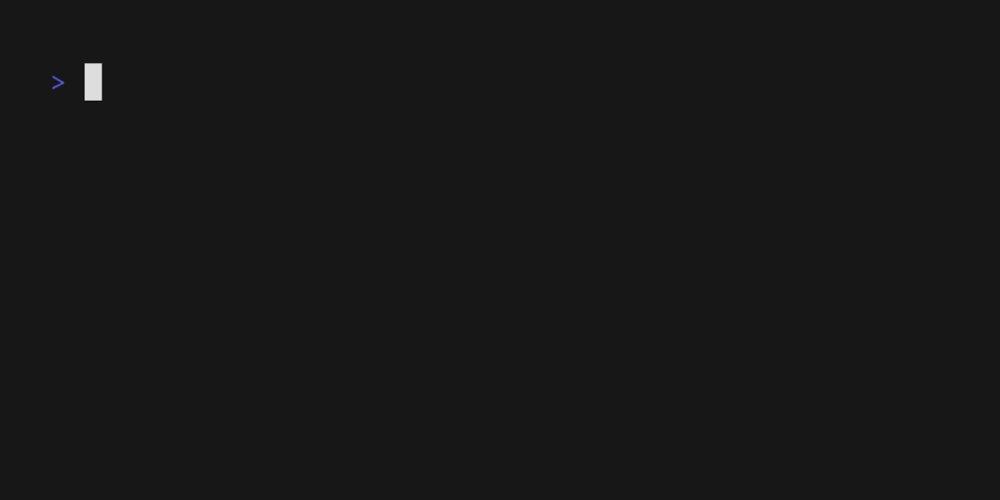

no templates
Works on plain text. No build system, no runtime hooks, no dependencies.
Devsyringe is a Go CLI that runs a command, extracts a value with a regex, and injects it into one or more files. You define the rules once in `devsyringe.yaml`, then run one command.
Install:
go install github.com/alchemmist/devsyringe/cmd/dsy@latest
$ dsy inject -c devsyringe.yaml → Update ./.env. → Update ./static/config.js. status: ok mode: strict
Static files do not have runtime config injection. When your tunnel URL, token, or build value changes, you end up copying it into HTML, JS configs, or legacy files. Devsyringe automates the update without turning your project into a templating system.
The core idea is simple: run a command, extract the value with a regex, and inject it into one or more target files using clues.
Works on plain text. No build system, no runtime hooks, no dependencies.
Extract once with a regex, inject into any number of targets.
Run `dsy inject` locally, or in CI to keep docs and configs up to date.
Built-in TUI shows running processes, status, and logs.
Define sources and targets in YAML, then run one command.
Start a command and read its live output.
Use `mask` (regex) to capture the dynamic value.
Find target lines by `clues` — multiple words on the same line.
Replace the matched value and write back to disk.
Tip: run dsy without arguments to open the TUI process
table.
Designed for situations where simple files still need dynamic values.
Extract a live URL from a tunnel command and inject it into `.env` and client configs.
Pull tokens from CLIs and keep infra configs in sync.
Inject git SHA or build versions into docs and status pages.
Update README or LaTeX files with live stats pulled from APIs.
Fetch addresses, endpoints, or secrets and update static config files.
A single command starts a tunnel, grabs the URL, and updates multiple files in place.

Choose the package manager you already use.
# Go go install github.com/alchemmist/devsyringe/cmd/dsy@latest # Arch (AUR) paru -S devsyringe # or: yay -S devsyringe # macOS (brew) brew tap alchemmist/homebrew-tap brew install devsyringe
Core commands that power the workflow.
Start an injection based on a YAML config.
Show the dynamic list of running processes.
Read logs for a running process by title.
Stop a process or delete it with logs.
Run dsy help or dsy [command] --help for
options.
lt --port 8080
live output stream
https://...loca.lt
first match wins
.env and src/config.js
replace only matched lines
Each `serum` describes one dynamic value: how to obtain it, how to match it, and where to inject it.
serums:
localtunnel:
source: lt --port 8080
mask: https://[a-z0-9\\-]+\\.loca\\.lt
targets:
env_file:
path: ./.env
clues: ["API_BASE_URL"]
frontend_config:
path: ./src/config.js
clues: ["API_URL", "const"]
What it does: starts `lt`, waits for a tunnel URL in the output, then replaces the value on lines that contain the clues in both `.env` and `src/config.js`.
Run: dsy inject -c devsyringe.yaml.
Step by step:
Launches `lt --port 8080` and reads the stream output.
Captures the first URL matching the regex mask.
Finds lines that include the clues and replaces the matched value.
Saves both files and prints update logs to the terminal.